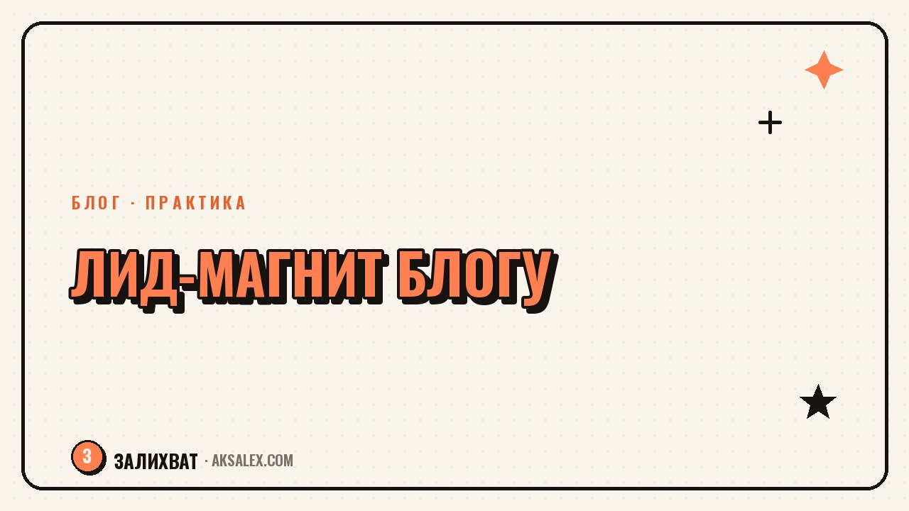

Лид-магнит для блога с помощью нейросети: как сделать

Лид-магнит - это бесплатный, но ценный материал, который блогер отдаёт в обмен на подписку, контакт или переход в канал: чек-лист, гайд, шаблон, мини-курс на пару писем. Без лид-магнита подписчик видит только посты в лайке и забывает про блог через день, а с хорошим лид-магнитом у тебя появляется база людей, с которыми можно работать дальше. Разберём, как собрать такой материал с помощью нейросетей - от идеи до готового файла - без найма дизайнера и копирайтера.
Какой лид-магнит выбрать под свою тему
Лид-магнит должен закрывать конкретную узкую проблему, а не тему блога целиком. Если блог про нейросети, 'гайд по нейросетям' никого не привлечёт - слишком общо. А 'подборка из 10 нейросетей для подписи к постам' уже конкретна и понятна по пользе.
Лучше всего работают материалы, которые решают задачу за 10-15 минут применения: чек-лист перед публикацией, шаблон для расчёта, подборка готовых формулировок. Чем быстрее человек получает результат, тем выше шанс, что он останется в базе.
Форматы, которые заходят лучше остальных
- Чек-лист - короткий список шагов перед конкретным действием
- Шаблон - таблица или структура, которую нужно заполнить своими данными
- Подборка - список инструментов, формулировок или примеров по узкой теме
- Мини-курс на 3-5 писем - подходит, если тема требует разбора по шагам
Как собрать текст лид-магнита с помощью нейросети
Текстовая нейросеть хорошо собирает черновик, если дать ей чёткое задание: тему, формат, аудиторию и примерный объём. Для чек-листа это список пунктов с короткими пояснениями, для подборки - структура 'название инструмента плюс одна строка, зачем он нужен'.
Готовый черновик обязательно нужно пройти самим и переписать то, что звучит общо. Нейросеть легко выдаёт правильные, но безликие формулировки - задача автора добавить конкретику: свои примеры, цифры, случаи из практики.
Лид-магнит работает, если за ним видна живая экспертность, а не шаблон, который можно найти в десяти других блогах.
Оформление: от текста к красивому файлу
После текста нужен визуальный формат - PDF с обложкой и структурой, который приятно открыть. Нейросетевые конструкторы презентаций и документов собирают макет по готовому тексту: разбивают его на страницы, подбирают шрифты и цвета, добавляют обложку с заголовком.
Для обложки и иллюстраций подходят нейросети для генерации изображений - достаточно описать стиль и тему, чтобы получить картинку без лицензионных рисков. Главное - выдержать единый стиль на всех страницах.
| Этап | Инструмент | Результат |
|---|---|---|
| Текст лид-магнита | Текстовая нейросеть | Черновик структуры и формулировок |
| Оформление в PDF | Конструктор документов с ИИ | Готовый файл с обложкой |
| Иллюстрации и обложка | Нейросеть для изображений | Картинки без лицензионных рисков |
| Текст для формы подписки | Текстовая нейросеть | Короткое описание выгоды для подписчика |
Как подать лид-магнит, чтобы на него подписывались
Даже отличный материал не соберёт подписчиков, если его подать как 'скачай мой гайд'. Нужно явно назвать выгоду: что конкретно человек получит и за сколько минут применит. 'Чек-лист перед публикацией поста - 7 пунктов, которые проверяешь за 2 минуты' работает лучше, чем безликое название 'чек-лист для блогеров'.
Разместить анонс стоит не один раз, а несколько: в закреплённом посте, в сторис с вопросом, в описании профиля со ссылкой. Люди редко подписываются с первого упоминания - решение чаще принимается после второго-третьего контакта с анонсом.
Где разместить анонс лид-магнита
- Закреплённый пост или сторис-хайлайт с прямой ссылкой
- Описание профиля - короткая строка с выгодой и ссылкой
- Отдельный пост с разбором проблемы, которую решает материал
- Напоминание в комментариях под смежными постами, где тема поднималась
Что делать с базой подписчиков после скачивания
Лид-магнит - это не конечная точка, а начало отношений с подписчиком. Если после скачивания человек не получает больше ничего, кроме обычных постов в общей ленте, смысл собранной базы теряется - она должна получать что-то дополнительное, ради чего стоило оставить контакт.
Текстовая нейросеть помогает собрать короткую цепочку из 2-3 писем или сообщений после скачивания: благодарность, дополнительная польза по теме, мягкое предложение следующего шага - консультации, продукта, подписки на канал. Такая цепочка превращает разовое скачивание в начало долгосрочного знакомства с аудиторией.
Частые вопросы
Какой лид-магнит сделать первым, если блог небольшой?
Начни с простого чек-листа или подборки по самой частой проблеме аудитории - такой материал быстрее собрать и проще протестировать, чем полноценный мини-курс. Если он соберёт подписчиков, можно усложнять формат позже.
Можно ли сделать лид-магнит полностью без дизайнера?
Да, конструкторы документов и презентаций с ИИ-блоком собирают аккуратный макет по готовому тексту, а нейросети для изображений закрывают обложку и иллюстрации. Ручная доработка понадобится, но дизайнер для этого не обязателен.
Как понять, что текст лид-магнита от нейросети звучит неестественно?
Если формулировки кажутся правильными, но безликими и без конкретики - это признак черновика, который нужно доработать своими примерами. Добавь цифры, случаи из практики и свой тон - это то, что превращает шаблон в настоящий авторский материал.
Сколько раз нужно анонсировать лид-магнит, чтобы на него подписывались?
Одного упоминания почти всегда недостаточно - люди чаще подписываются после второго-третьего контакта с анонсом. Размести ссылку в закреплённом посте, в описании профиля и отдельно разбери проблему, которую материал решает.
Что делать с подписчиками после того, как они скачали лид-магнит?
Настрой короткую цепочку из нескольких сообщений с дополнительной пользой по теме и мягким предложением следующего шага. Без этого собранная база остаётся списком контактов, которые ничего больше не получают.
Раз тема оказалась полезной, вот что почитать следующим. Как понять, что хобби готово стать делом, и превратить увлечение в источник дохода без лишнего риска.
Читать статью →а не вручную